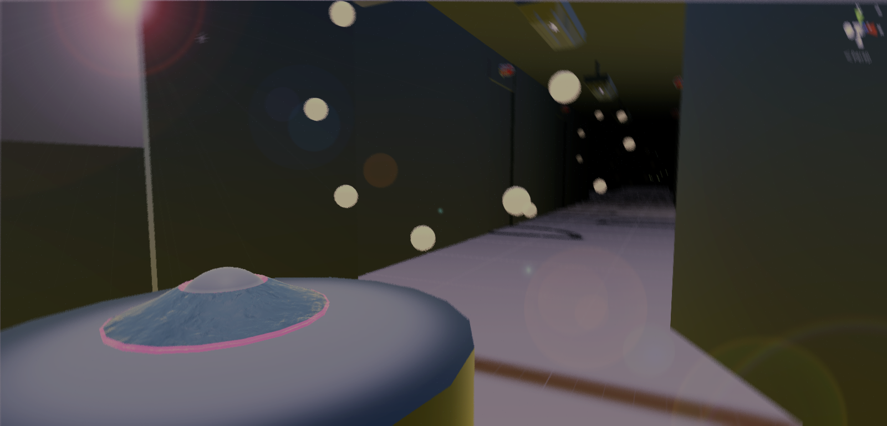

My Recent Projects
Drive
An AC Transit Game in Unity C#
This project is a mobile game being made in Unity for a client, AC Transit. The project was started by Cogswell and offered as a class called Game Studio. We worked in a team of about 20 split into multiple departments each with a lead. This furthered my experience with working in a big multi-department team and furthered my skills with handling git repositories. The game itself is an endless runner in which the player is a bus avoiding traffic and picking up/dropping off color coded passengers at their corresponding bus stop. The game is coded using C# and is source controlled using a git GUI called SourceTree. This game is expected to be released by the end of Summer 2017.

Icarus
A Unity Project in C#
Project Icarus is a collection of experiments put together in Unity using C#. Parts of this project were later adapter into a demo game for a Level Design class. In this project, I experimented with interaction between real-world variables and in-game objects, bezier curves, fractals and Unity tool creation. The demo game is a prototype for an endless runner which utilizes scripted events, menuing, a basic tutorial, points and obstacles that I put together.

Photoshop
A collection of some of my work
I have been dabbling in Photoshop since my high school days, but I started to learn it in June of 2016. I spent a couple of months learning to work in Photoshop properly and non-destructively. Although I started learning Photoshop by fixing and combining images in natural-looking ways, I recently have been using it to make icons and some interesting compilations.